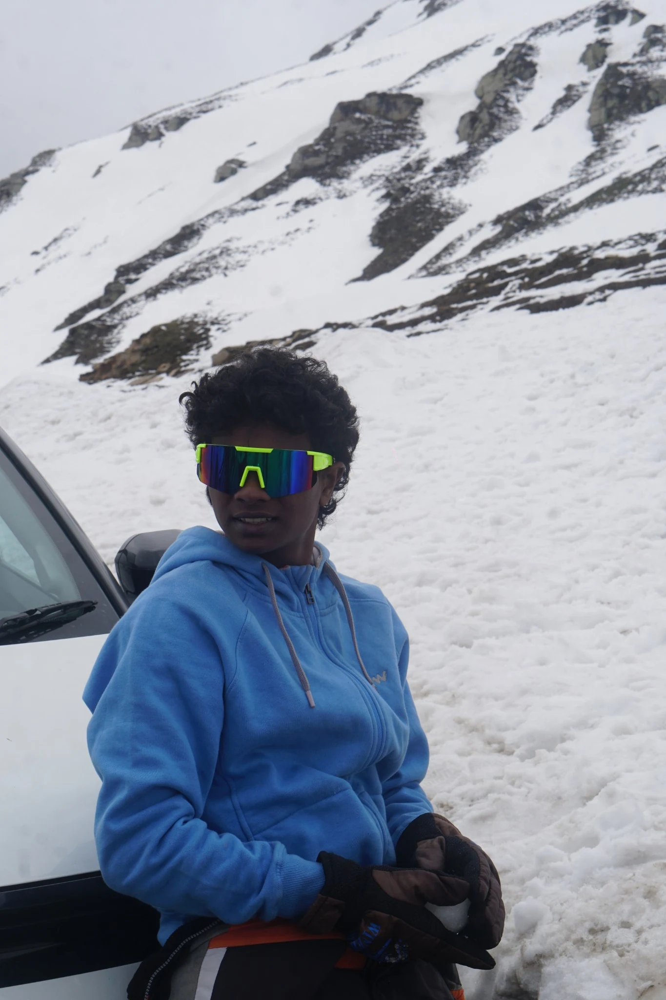
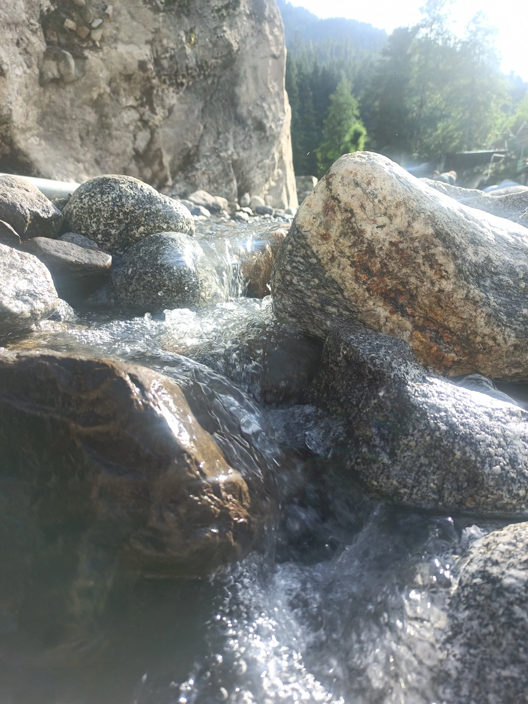
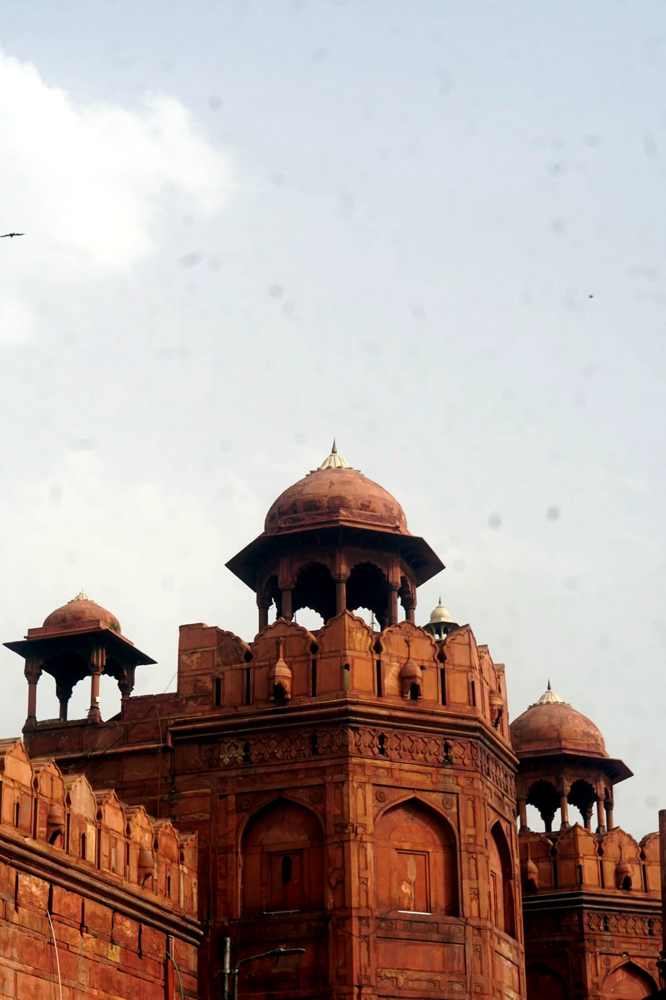
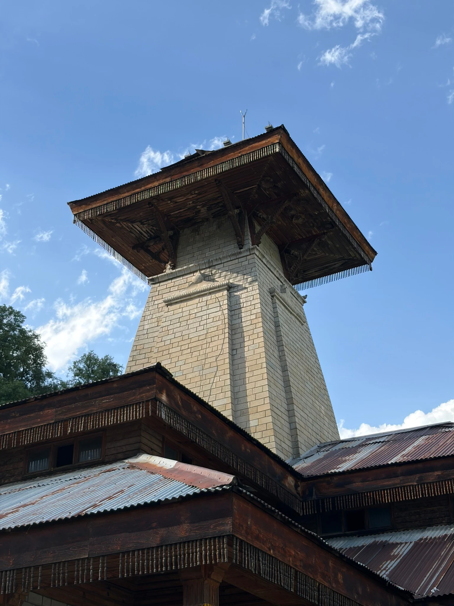

PERSONAL SPACE 2026
Hey, I'm
Subi.
Student, creator and someone who loves exploring how things work. Always learning, building and capturing moments along the way.
CURIOUS BY NATURE
01CREATE
↗ EXPLORE
↗ EXPLORE
✳
✦
A LITTLE SPACE
ON THE INTERNET
ON THE INTERNET
SCROLL TO EXPLORE
01 / A LITTLE ABOUT ME
Learning today.
Building tomorrow.
I'm a student with a creative side and a big interest in technology. I enjoy experimenting with design, editing, websites and new ideas.
This site is my corner of the internet — a place to share what I'm learning, what I'm making and the moments I want to remember.
02 / THINGS I'M EXPLORING
A WORK IN PROGRESS — ALWAYS01
Web & technology
Learning how the web works and building small things along the way.
02
Vertex Studio
A creative space for photo, video and visual design projects.
03
Photography
Collecting frames, places and little details worth remembering.
03 / MOMENTS & MEMORIES
A FEW FRAMES FROM MY CAMERA ROLL





04 / THE NEXT CHAPTER